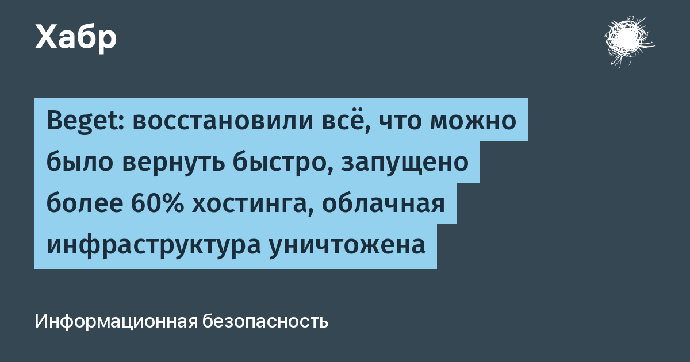

В ночь на 2 ноября 2026 года инфраструктура Beget подверглась массированной кибератаке, и 6 ноября компания опубликовала в своём Telegram-канале статус, из которого следует: обычными средствами инцидент не закрывается. «Обычной очисткой, проверкой и перезапуском серверов дальше не обойтись», — пишет Beget. Компания ранее уже официально уведомила клиентов о признаках форс-мажора по ст. 401 ГК РФ.
Запущено более 60% хостинга; оставшиеся серверы пострадали сильнее и будут восстанавливаться из бэкапов, срок на запуск этой функции — ориентировочно 5 дней. По VPS оценка самая неприятная: файловые бэкапы будут доступны только половине пользователей. Облачную инфраструктуру Beget прямо называет уничтоженной — архитектуру и управляющие сервисы уже восстановили, первые серверы обещают подключить за 1–2 дня, доступ к сохранившимся копиям дадут через панель управления. Панель запускают по частям (DNS, домены, базы данных, сайты): часть данных внутренней системы потеряна, связки «аккаунт — услуги» для части клиентов собирают заново. Пока сервисы не восстановлены, оплата у клиентов не списывается.
Beget ведёт работу с полицией, ИБ-компаниями, ТЦИ/КЦ, НКЦКИ и другими госорганами. Отдельно отмечается, что угроза для инфраструктуры ещё сохраняется: компания «переделывает каждую точку, которая может быть уязвимой, включая те, которые раньше не казались опасными». Столь открытое признание уничтожения собственной облачной платформы — редкий случай для российского хостингового рынка: обычно ограничиваются формулировкой «технические работы».
Следить за статусом в Telegram-канале Beget и панели управления. Как только появится возможность скачать свой бэкап (обещают в течение ~5 дней) — сразу забирать его и держать копию у другого провайдера. Клиентам VPS стоит исходить из того, что данных может не быть: поднимайте сервисы на запасных мощностях, развёртывая их из своих образов и внешних копий. До полного восстановления не стоит вносить предоплату и переносить на платформу новые проекты.
Классическая схема «бэкапы лежат у того же хостера, что и прод» в этом инциденте сыграла злую шутку: бэкап-серверы пострадали вместе с основной инфраструктурой. Инцидент Beget — наглядное напоминание, что копия резервных копий вне периметра провайдера — это не паранойя, а базовая гигиена.